5. Mata als Marcianitos¶
{kind=link}
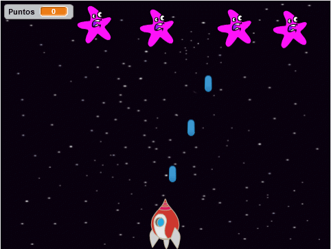
En aquesta pràctica programarem un joc que consisteix a matar marcians que cauen des de la part superior de la pantalla amb el làser d’una nau espacial.
; BR |
Comencem el | Editor_de_scratch |.
; BR |
Eliminem el gat prement -li amb el botó dret del ratolí i, a continuació, fem clic.
; Suprimeix-Gato |
; BR |
Canviarem els antecedents de l’escenari amb ** estrelles **.
Premeu el botó nou.
; CHANGE-SCENARY |
A continuació, fem clic al tema de l'espai ** **.
A continuació, seleccionem el fons ** estrelles **.
La pantalla serà la següent.
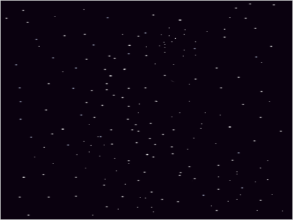
; BR |
Afegim un caràcter nou, una nau espacial ** **.
Premeu el botó d'objecte nou | Objecte nou |
A continuació, fem clic al tema de l'espai ** **.
A continuació, seleccionem l'objecte ** naus espacial **.
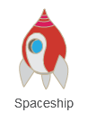
; BR |
Afegim un personatge nou, un ** botó blau ** que servirà per fer el rodatge.
Premeu el botó d'objecte nou | Objecte nou |
A continuació, fem clic a les coses de la categoria ** **.
A continuació, seleccionem l'objecte ** Botó2 **.
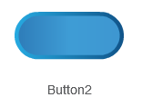
Ara, feu clic al botó ** i **, canviem el seu nom per ** Shot **
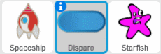
; BR |
Afegim un ** Sea Star **, que actuarà com a Marciano.
Premeu el botó d'objecte nou | Objecte nou |
A continuació, premem els animals de la categoria ** **.
A continuació, seleccionem l'objecte ** Starfish **.
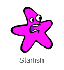
; BR |
Afegim la variable ** punts **, que comptarà el nombre de punts acumulats mentre juguem.
Dins de la pestanya Dades | Dades |,
Premeu Creeu una variable | Create-variable |
Canviem el nom de la variable per ** punts **
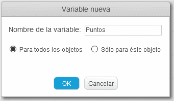
Finalment, premeu el botó ** ok **
; BR |
Ara anirem al programa de naus espacials
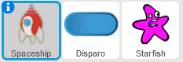
I allà creem el següent programa.
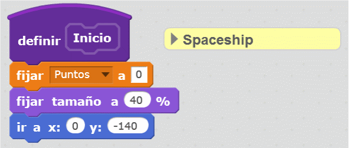
Aquestes instruccions inicien el programa esborrant els punts variables, canvien la mida de la nau espacial i el col·loca a la part inferior de la pantalla.
; BR |
Continuem programant la nau espacial.
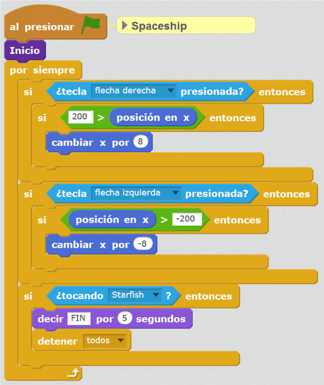
Aquest bloc mou la nau espacial d’esquerra a dreta i acaba el programa quan un martic toca el vaixell.
; BR |
Amb una altra funció petita, el vaixell pot disparar el seu làser.
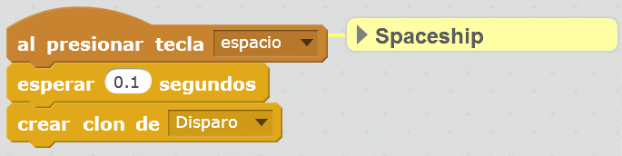
; BR |
Intentarem que tot funcioni correctament prement la bandera verda i movent la nau a l’esquerra i a la dreta amb les tecles del cursor.
El làser funcionarà més tard quan programem l'objecte ** Shot **.
{kind=link}
{kind=link}
{kind=link}
Xut làser¶
Ara anirem al programa d'objectes ** Shot **
I allà programarem la seva operació.
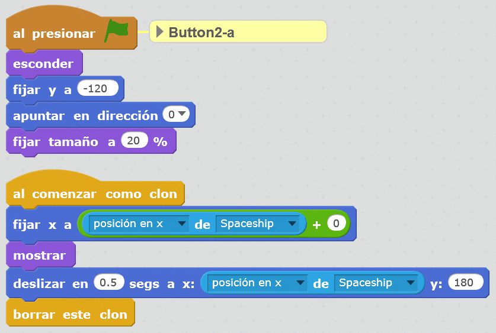
Aquest programa situa l’inici del làser a la pantalla inferior (y = -120),
Col·loqueu el botó verticalment (adreça 0)
i redueix la mida del botó blau per semblar un tret (mida fins al 20%)
A continuació, cada clon apareix a la posició actual de la nau espacial i es mou fins arribar a la pantalla, on desapareix.
; BR |
En aquest moment, podeu provar el funcionament dels trets amb la nau espacial.
{kind=link}
Marcians¶
Ara anirem al programa d'objectes ** Starfish **
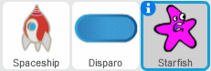
I anem a programar el comportament dels marcians al començament del programa.
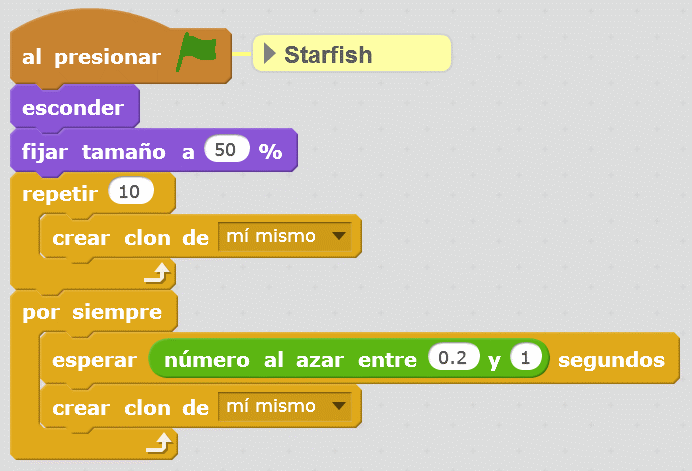
Aquest programa inicia 10 marcians a la part superior de la pantalla i està creant cada moment més marcians.
; BR |
El programa que gestioni cadascun dels marcians serà el següent.
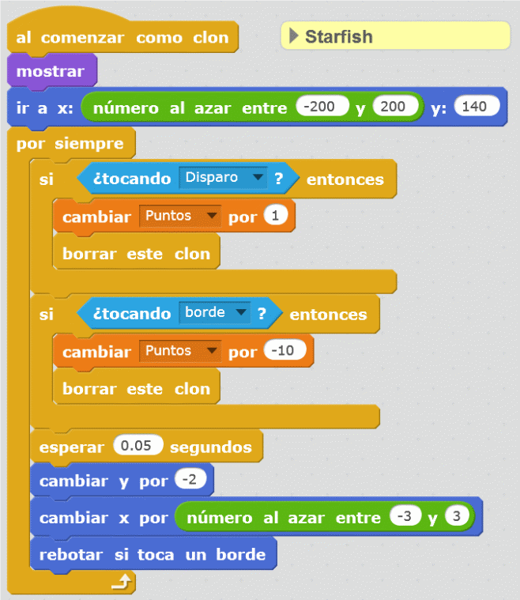
Al començament d’un nou marcià, apareix a la part superior de la pantalla, en una posició aleatòria.
Si un tret toca un marcià, desapareix i el comptador de punts augmenta un punt
Si el martic toca la vora inferior, això desapareix i el comptador de punts disminueix 10 punts.
Cada segona meitat, el marcià baixa a la part inferior de la pantalla.
; BR |
Aquest és el moment de provar tots els programes junts i jugar als Marcianitos durant un temps.
; BR |
{kind=link}
{kind=link}
Exercicis¶
- Canvieu els paràmetres del programa per ajustar la vostra dificultat fent que apareguin més marcians per a la segona i baixa.
- Afegiu una funció de tir doble per a la nau espacial per prémer la tecla "fletxa up "
- Afegiu una barrera que protegeixi la nau espacial durant un segon per prémer "fletxa cap avall ".
- Inventeu una altra modificació original del programa.